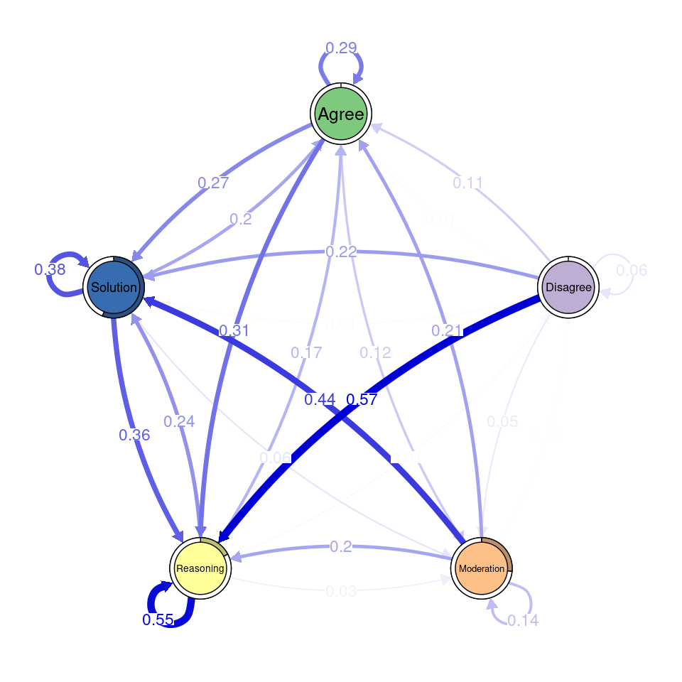

library(dplyr) # install.packages("dplyr")
library(tidyr) # install.packages("tidyr")
library(tibble) # install.packages("tibble")
library(reticulate) # install.packages("reticulate")
library(text) # install.packages("text")
library(caret) # install.packages("caret")
library(mltools) # install.packages("mltools")10 Using BERT-like Language Models for Automated Discourse Coding: A Primer and Tutorial
Abstract
Coding text data in qualitative research is a labor-intensive and error-prone process that requires meticulous attention to detail as well as consistency in the coding criteria. Large Language Models (LLMs) present a promising solution to alleviate some of these challenges by automating part of the coding process. This tutorial explores the application of LLMs for automated text classification using word embeddings through the R package text and different BERT-like large language models. We implement a machine learning pipeline that combines word embeddings with supervised machine learning algorithms to code text data with high accuracy. We present a case study on collaborative problem-solving in which we train a classification model on a small portion of manually coded data and then apply it to classify the remaining data. The tutorial also covers the evaluation of coding accuracy by comparing human and machine-coded data using classic machine learning performance metrics as well as Cohen’s kappa, Matthews’ correlation coefficient, and Gwet AC1, measures commonly used to assess interrater reliability in qualitative research. Lastly, we apply different learning analytics techniques to compare the findings obtained from human-coded data and automatically coded data.
1 Introduction
Coding text data is an effortful and time-consuming process and constitutes one of the major challenges faced by qualitative researchers. Coding refers to the process of “essentially indexing or mapping data, to provide an overview of disparate data that allows the researcher to make sense of them in relation to their research questions” [1]. Coding requires defining codes, i.e. the concepts of interest, and localizing places in text where codes occur [2]. There are two main approaches of deriving at the codes: inductive coding, where codes emerge from the data, and deductive coding, which uses a set of predetermined codes to classify the data [3].
The coding process requires close inspection of data before it can be analyzed. Researchers often have to scroll through large volumes of text, identify the main concepts and themes, and assign codes that best describe them. This process requires a high level of attention, as every line of text must be carefully examined. Furthermore, maintaining consistency in coding across different parts of the data is difficult, especially if more than one researcher is involved, often requiring multiple rounds of review, discussion, and revision [1]. Coding of text is vital in qualitative research; however, it is also an important part of many quantitative or mixed-methods studies, where text data coding is often delegated as a part of data preprocessing before it can be analyzed by other, often quantitative, methods. In terms of machine learning (ML), deriving codes inductively can be similar to text summarization tasks, where an algorithm discovers topics within a text, while localizing a presence of a specific code in text can match annotation or classification tasks, where an algorithm assigns a class label to a given data point based on its characteristics.
Large Language Models (LLMs) offer a promising solution to ease some of the challenges related to coding of text data. LLMs are trained on vast amounts of text data and have the ability to process and generate human-like language [4]. When presented with the task of coding text data, LLMs can significantly reduce the time and effort required by automating —at least part of— the process, as this technology can quickly scan large volumes of text, as well as identify the main underlying concepts. The introduction of the transformer architecture enabled the development of of different types of LLMS such as Google’s Bidirectional Encoder Representations from Transformers (BERT) trained using masked language modeling and open AI’s Generative Pre-trained Transformers (GPT) trained using causal language modeling (see [5], [6] for more details). Although both models can be adapted to a variety of tasks, BERT models are typically recommended for text classification, while GPT models for text summarization [7].
LLMs are capable of performing zero-shot classification, which means that without the need for specifically trained data for certain categories [4, 8], the model can classify text based on its broad understanding of language and knowledge. This capability stems from the extensive and diverse textual data encountered during the pretraining phase, enabling the model to make reasonable inferences and predictions for categories it has not been explicitly trained on through contextual understanding and knowledge transfer.
While zero-shot classification significantly reduces both the technical and intellectual effort required from the researchers, it often lacks the precision and reliability that might be required for domain-specific tasks. A possible middle ground solution that achieves a good trade-off between manual coding and completely automated coding, is the combination of word embeddings —implemented in LLMs— with supervised ML. Word embeddings capture the semantic meaning of text in a way that is informed by the context in which words appear [9] (the concept is explained more thoroughly in Section 10.3.5). Generating these embeddings allows us to use the textual information as features in a classification model (such as Random Forest or Support Vector Machine) [10]. This approach requires that researchers to manually code part of the data, while the major part of the process is delegated to the LLM, achieving —allegedly— more accurate and more consistent classifications, as the model is explicitly trained on data that reflects the task at hand.
In this tutorial, we will learn how to implement automated discourse classification using word embeddings. We will rely on the R package text and BERT-like models. We will train a classification ML model with a small percentage of a dataset on collaborative problem solving, and we will automatically classify the remaining text. We will evaluate the classification performance and compare the agreement of the human-coded and LLM-coded text using Cohen’s kappa, Gwet’s AC1 and Matthews Correlation Coefficient. We will also compare the performance of different BERT-like algorithms using traditional metrics. Lastly, we will investigate how the insights gathered from applying different learning analytics techniques to the automatically coded data differ from those obtained from human-coded data.
3 A case study on collaborative problem solving
3.1 The dataset
The dataset that we use in this tutorial is based on an experiment in which small groups participated in a group discussion. In this discussion, the groups aimed to solve the Wason card selection task: a logic puzzle used to study reasoning and decision-making [40]. The discussion data has been qualitatively coded according to the nature of participants’ contributions Specifically, 500 dialogues, containing 14,000 utterances were coded using a novel annotation schema designed to capture deliberation cues. For more details about the experiment, refer to the original article [40].
3.2 Automated discourse coding
The process followed in the tutorial is depicted in Figure 10.1. We will first divide our dataset in training and testing sets (I). Contrary to other ML tasks, we use only a small part of the data for training (15%), and the rest for testing. The goal is to minimize the number of pieces of text that we have to manually code. Then, we will create word embeddings from the text data (II). Word embeddings are numerical representations of words that capture their semantic meaning, enabling the model to understand and process the text in a way that reflects the relationships between words. We will try different existing LLMs to create the embeddings. We then use the word embeddings corresponding to the training data and their manual codes as an input to train our classifier ML model (III). Lastly, we use the word embeddings of the test dataset to predict their codes using the trained model and evaluate the results (IV). We compare the predicted codes with the actual ones using both traditional ML performance metrics based on the confusion matrix, as well as several measures of interrater reliability to assess the agreement between human and AI coding. We will compare the performance of the different BERT-like language models to assess which one is more suitable for the classification task. For a beginners’ tutorial on ML classification tasks, refer to Chapter 4 [41] in this book.

3.3 Setting up the enviroment
Before starting our task, we need to install and load the necessary packages, which are described below:
dplyr: A powerful and popular R package used for data manipulation and transformation [42]. It provides a set of intuitive functions that make it easy to filter, select, mutate, arrange, and summarize data within a data frame. It is especially useful for cleaning and preparing data before analysis.tidyr: An essential R package for tidying data,tidyrhelps reshape and clean data sets so they can be analyzed more effectively [43]. It provides functions to pivot data between wide and long formats, split or combine columns, and ensure that data is in a consistent, tidy format suitable for analysis.tibble: A modern take on data frames in R,tibble[44] provides a lightweight and faster alternative to the traditionaldata.frameobject.reticulate: A package that provides an interface between R and Python [45]. It allows users to run Python code within R and seamlessly exchange data between the two languages. This is particularly useful when combining the strengths of R and Python in a single analysis pipeline, taking advantage of Python’s ML libraries, such as TensorFlow or Scikit-learn, while still working within an R environment.caret: A package used for building and evaluating ML models in R [46]. It simplifies the process of training models, performing cross-validation, and optimizing model parameters. The package supports a wide range of algorithms and provides tools for data splitting, pre-processing, feature selection, and model evaluation.text: Thetextpackage is designed for text analysis in R [47]. It provides tools for processing and analyzing textual data, such as tokenization, vectorization, sentiment analysis, and topic modeling. It uses transformers, natural language processing (NLP) and ML methods to examine text and numerical variables.mltools: Themltoolspackage in R [48] provides a collection of machine learning tools and utilities designed to simplify common preprocessing and data transformation tasks for machine learning workflows. We will use it for some of its evaluation functions.
Below is the code to load the libraries. Install them first if you do not have them already using the commented code.
In addition to the previous libraries, since the text library relies on Python underneath, we need to make sure we have Python installed (preferrably together with the conda environment). If you do not have it and you do not wish to install the complete Python environment, you can install miniconda through the package reticulate as follows (uncomment to run):
# reticulate::install_miniconda()Once done, you need to initialize the Python session as follows. This is an interactive command so you will need to enter “yes” in the terminal to advance.
textrpp_initialize(save_profile = TRUE)Now that we have all the R packages, we will download our data. The dataset described earlier is available in Hugging Face and therefore we can download it using the datasets package in Python. We need to install it before using it for the first time with the commented command. After importing datasets, we download the dataset that we will use in the tutorial: "gkaradzhov/DeliData". The cache_dir argument indicates where the data will be stored in your computer; feel free to change the name from "cache" to something else.
# reticulate::py_install("datasets")
datasets <- import("datasets")
dataset <- datasets$load_dataset("gkaradzhov/DeliData", cache_dir = "cache")We can now extract the data in an R dataframe as follows:
df_raw <- dataset$train$to_pandas()If we inspect the dataframe, we see that the it contains a column to identify the team (group_id) and the message (message_id), a column containing the message original text (original_text), and a cleaned one (clean_text). It also contains the code used to annotate the message (annotation_target), and two other annotation fields. In addition, it contains several other columns related to the solution of the task and the team’s performance. Let us focus on the column that contains the manual code (annotation_target). We can inspect it to see the different codes that have been used to classify the discussion utterances:
table(df_raw$annotation_target)
0 Agree Disagree Moderation Reasoning Solution
3274 2047 111 785 4382 3403 We see that there are many rows that have not been assigned a code. They correspond to messages that do not fall under any of the deliberation codes. We can remove them from our dataset to work only with the coded text as follows:
classification <- c("Solution", "Reasoning", "Agree", "Disagree", "Moderation")
df <- df_raw |> filter(annotation_target %in% classification) Now we are ready to start working with the data.
3.4 Splitting the dataset
As is common in most ML tasks, we split our data into a training dataset and a testing dataset. We will use the training dataset to train an ML model to classify text data into one of the five codes and we will use the test dataset to evaluate how accurately our model classifies “unseen” text. This strategy is designed to mimic a realistic coding scenario where the objective is to reduce the amount of text that needs to be manually coded. We use the function createDataPartition from the caret package to split our data into a training dataset (consisting of 15% of the data) and a testing dataset (the remaining 85% of the data). We do so in a way that the two partitions are balanced in term of proportion of codes.
seed = 123
set.seed(seed) # for reproducibility
trainIndex <- createDataPartition(df[["annotation_target"]], p = 0.15,
list = FALSE,
times = 1)
# Creating training and testing datasets
df_train <- df[trainIndex, ]
df_test <- df[-trainIndex, ]3.5 Word embeddings
Our next task is to convert our text data into numeric representations (i.e., word embeddings) to be able to apply common ML techniques. Word embeddings are a type of word representation that allows words with similar meaning to have a similar representation. Word embeddings can be defined as dense vectors of real numbers that represent words in a way in which words that share similar contexts are placed closer together. Unlike traditional one-hot encoding, where each word is represented as a unique binary vector, word embeddings capture semantic relationships between words, making them powerful for various NLP tasks. In simpler terms, word embeddings are a way to represent words as numbers so that words with similar meanings end up having similar numerical patterns.
In simple models like Word2Vec, word embeddings are created by training on large text corpora. These models learn to map each word to a vector in such a way that words used in similar contexts have similar vectors. For example, the vectors for “king” and “queen” might be close to each other because these words often appear in similar contexts (e.g., both might appear near words like “monarch,” “crown,” and “royalty”). BERT models take the concept of word embeddings one step further. BERT is a transformer-based model that understands the context of a word in a sentence by looking at both its left and right sides simultaneously (bidirectional). This is in contrast to earlier models like Word2Vec, which only considered the context in a single direction.
BERT starts by tokenizing the input text. This process breaks the text into smaller units called tokens. BERT uses a technique called WordPiece tokenization, where words are broken down into subword units. This helps BERT handle out-of-vocabulary words by representing them as combinations of known subwords. BERT has an embedding layer that converts these tokens into dense vectors. However, unlike static word embeddings (e.g., Word2Vec, where each word has a single vector), BERT’s embeddings are dynamic. The embedding for a word depends not just on the word itself but also on the entire context of the sentence. In addition to token embeddings, BERT includes positional embeddings, which provide the model with information about the position of each token in the sentence. This is crucial because, unlike recurrent neural networks for example, transformers do not inherently handle the order of words. BERT then passes these embeddings through multiple layers of transformers, where self-attention mechanisms allow the model to focus on different parts of the sentence. This enables BERT to capture complex dependencies and relationships between words in a sentence. The output from the final transformer layer provides the contextualized word embeddings. These embeddings are rich in context and meaning because they take into account the entire sentence. For example, the word “bank” will have different embeddings in the sentences “He sat on the river bank” and “He went to the bank to withdraw money,” reflecting the different meanings of the word in these contexts.
Several variations and enhancements have been created based on BERT. For instance, RoBERTa (A Robustly Optimized BERT Pretraining Approach) [49] builds on BERT’s architecture by enhancing the pretraining process with more data, among other improvements. These modifications, along with larger batch sizes and learning rates, as well as the introduction of dynamic masking, make RoBERTa more robust and better performing than BERT on various natural language processing tasks. Another example is XLNet [50], which improves upon BERT by using permutation language modeling, allowing it to capture bidirectional context without the need for masking. It builds on the Transformer-XL architecture, enabling the handling of longer sequences and dependencies beyond the sentence level. XLNet’s approach combines autoregressive training with a permutation-based technique, making it particularly effective for tasks requiring complex context understanding, such as question answering and language modeling.
We will create word embeddings for the training and testing datasets using different variations of BERT in order to compare performance between models. For this purpose, we will use the textEmbed function from the text package. By default, this function uses the "bert-base-uncased" language model to create the word embeddings. We will use this model as a baseline, and compare it with two other models: "roberta-base" and "xlnet-base-cased". You can try other language models available in Hugging Face that support the task of creating word embeddings (text classification category). You should take into account that this process takes a considerable amount of run time. As an input to the function we provide the "clean_text" column of our training and testing data, which contains the text to be coded.
# Creating embeddings for the training data
## BERT
word_embeddings_bert <- textEmbed(df_train[,"clean_text"],
model = "bert-base-uncased",
aggregation_from_tokens_to_word_types = "mean",
keep_token_embeddings = FALSE)
## RoBERTa
word_embeddings_roberta <- textEmbed(df_train[,"clean_text"],
model = "roberta-base",
aggregation_from_tokens_to_word_types = "mean",
keep_token_embeddings = FALSE)
## XLNet
word_embeddings_xlnet <- textEmbed(df_train[,"clean_text"],
model = "xlnet-base-cased",
aggregation_from_tokens_to_word_types = "mean",
keep_token_embeddings = FALSE)
# Creating embeddings for the testing data
## BERT
word_embeddings_bert_test <- textEmbed(df_test[,"clean_text"],
model = "bert-base-uncased",
aggregation_from_tokens_to_word_types = "mean",
keep_token_embeddings = FALSE)
## RoBERTa
word_embeddings_roberta_test <- textEmbed(df_test[,"clean_text"],
model = "roberta-base",
aggregation_from_tokens_to_word_types = "mean",
keep_token_embeddings = FALSE)
## XLNet
word_embeddings_xlnet_test <- textEmbed(df_test[,"clean_text"],
model = "xlnet-base-cased",
aggregation_from_tokens_to_word_types = "mean",
keep_token_embeddings = FALSE)If we inspect the generated embeddings, we see that there are 1,612 rows in the texts of the training embeddings: one per row of the training dataset. However, instead of one column with the text, we have a large number of numerical columns that represent the text. For example, in BERT, we have 768, which corresponds to the size of the BERT token embedding vector.
as_tibble(word_embeddings_bert$texts$texts)# A tibble: 1,612 × 768
Dim1_texts Dim2_texts Dim3_texts Dim4_texts Dim5_texts Dim6_texts Dim7_texts
<dbl> <dbl> <dbl> <dbl> <dbl> <dbl> <dbl>
1 0.528 -0.0955 0.0600 0.124 0.533 -0.420 0.0723
2 0.507 -0.0987 0.0220 -0.188 0.181 -0.655 0.356
3 0.448 -0.0161 0.257 -0.485 -0.310 -0.194 0.190
4 -0.117 -0.318 0.418 -0.119 0.216 -0.511 0.287
5 -0.629 -0.0899 0.0623 -0.0132 0.143 0.292 -0.210
6 0.421 -0.211 0.318 0.104 -0.0157 -0.366 0.231
7 0.615 0.0502 0.561 -0.406 0.0821 -0.309 -0.0774
8 0.126 0.0952 0.146 0.113 -0.318 -0.142 -0.350
9 0.287 0.0764 0.261 -0.0609 0.0596 -0.345 0.0266
10 0.547 -0.272 0.163 0.0564 -0.197 -0.391 0.0832
# ℹ 1,602 more rows
# ℹ 761 more variables: Dim8_texts <dbl>, Dim9_texts <dbl>, Dim10_texts <dbl>,
# Dim11_texts <dbl>, Dim12_texts <dbl>, Dim13_texts <dbl>, Dim14_texts <dbl>,
# Dim15_texts <dbl>, Dim16_texts <dbl>, Dim17_texts <dbl>, Dim18_texts <dbl>,
# Dim19_texts <dbl>, Dim20_texts <dbl>, Dim21_texts <dbl>, Dim22_texts <dbl>,
# Dim23_texts <dbl>, Dim24_texts <dbl>, Dim25_texts <dbl>, Dim26_texts <dbl>,
# Dim27_texts <dbl>, Dim28_texts <dbl>, Dim29_texts <dbl>, …3.6 Training the model
Now that we have converted our text data into numeric variables through word embeddings, we are ready to train our ML model. Specifically, we will train a Random Forest classifier algorithm. We will rely on the textTrainRandomForest function from the text package for this purpose. As training data, we will enter the embeddings from the previous step (for each of the three BERT-like models). As an output, we will enter the column that contains the codes in the original training data: "annotation_target". We will use 5-fold cross validation to train the model (outside_folds argument). For more information about the training function, refer to the text package documentation.
trained_model_bert <- textTrainRandomForest(
x = word_embeddings_bert$texts,
y = data.frame(as.factor(df_train[["annotation_target"]])),
outside_folds = 5,
simulate.p.value = TRUE,
append_first = TRUE,
multi_cores = TRUE,
seed = seed
)
trained_model_roberta <- textTrainRandomForest(
x = word_embeddings_roberta$texts,
y = data.frame(as.factor(df_train[["annotation_target"]])),
outside_folds = 5,
simulate.p.value = TRUE,
append_first = TRUE,
multi_cores = TRUE,
seed = seed
)
trained_model_xlnet <- textTrainRandomForest(
x = word_embeddings_xlnet$texts,
y = data.frame(as.factor(df_train[["annotation_target"]])),
outside_folds = 5,
simulate.p.value = TRUE,
append_first = TRUE,
multi_cores = TRUE,
seed = seed
)3.7 Using the model to predict
We can now use the trained models to code the remainder of the data (i.e., the word embeddings of the test dataset).
predicted_bert <- textPredict(
model_info = trained_model_bert,
word_embeddings = word_embeddings_bert_test$texts
)
predicted_roberta <- textPredict(
model_info = trained_model_roberta,
word_embeddings = word_embeddings_roberta_test$texts
)
predicted_xlnet <- textPredict(
model_info = trained_model_xlnet,
word_embeddings = word_embeddings_xlnet_test$texts
)3.8 Evaluating the model
As a first measure of the performance of our models, we can use the results of the training data. To ease the comparison, let us first combine all the results in a single dataframe (rbind) and adding the name of the model mutate to be able to identify each set of results. We then pivot our data (pivot_wider) to show all the metrics of each model as columns, and each model as a row.
As we can see in Table 10.1, RoBERTa consistently outperforms BERT and XLNet across most key metrics, showcasing its superior performance. For accuracy, RoBERTa achieves the highest value (0.788), followed closely by BERT (0.770), while XLNet (0.734) lags behind. This indicates RoBERTa’s ability to make correct predictions more consistently across the dataset. When considering balanced accuracy, which accounts for both sensitivity and specificity, RoBERTa (0.769) again leads, demonstrating its effectiveness at handling imbalanced classes. BERT performs respectably (0.748), while XLNet (0.717) shows the weakest balance between true positive and true negative rates. In terms of sensitivity (recall), RoBERTa (0.605) outperforms BERT (0.568) and XLNet (0.517), highlighting its ability to correctly identify positive instances. Meanwhile, for specificity, RoBERTa (0.934) slightly surpasses BERT (0.928) and XLNet (0.917), reinforcing its capacity to avoid false positives. For precision, RoBERTa (0.857) maintains its advantage over BERT (0.843) and XLNet (0.809), reflecting fewer false positives. The F1 score, which balances precision and recall, also favors RoBERTa (0.645), with BERT (0.610) trailing and XLNet (0.547) performing the weakest. Looking at kappa, a measure of agreement between predicted and actual labels beyond chance, RoBERTa (0.685) once more outperforms BERT (0.654) and XLNet (0.600), showcasing its robustness in classification consistency. Finally, ROC-AUC values indicate RoBERTa (0.910) as the strongest model, effectively balancing sensitivity and specificity, followed by BERT (0.889) and XLNet (0.843). Overall, the results strongly favor RoBERTa across all metrics, making it the most suitable model for text dataset coding in this scenario. BERT provides solid performance but falls slightly behind in several areas, while XLNet struggles particularly with sensitivity, F1 score, and class balance.
rbind( # Combine the performance results of each model
trained_model_bert$results |> mutate(Model = "BERT"),
trained_model_roberta$results |> mutate(Model = "RoBERTa"),
trained_model_xlnet$results |> mutate(Model = "XLNet")) |>
select(-.estimator) |>
pivot_wider(names_from = ".metric", values_from = ".estimate") | Model | accuracy | bal_accuracy | sens | spec | precision | kap | f_meas | roc_auc |
|---|---|---|---|---|---|---|---|---|
| BERT | 0.770 | 0.748 | 0.568 | 0.928 | 0.843 | 0.654 | 0.610 | 0.889 |
| RoBERTa | 0.788 | 0.769 | 0.605 | 0.934 | 0.857 | 0.685 | 0.645 | 0.910 |
| XLNet | 0.734 | 0.717 | 0.517 | 0.917 | 0.809 | 0.600 | 0.547 | 0.843 |
In a real setting, if we were to choose one of the three models to code our text dataset based solely on the performance metrics obtained from the training process, we would choose RoBERTa. Since in this case we have access to the fully coded dataset, let us verify if RoBERTa is still the best choice when faced with the remainder of the dataset —still unseen by any model. For this purpose, we will compare the manual codes with the automatic codes classified by our models. First, let us combine all codes into a single dataframe. We obtain the manually coded data from the test data (df_test), and the automatically coded data from the prediction results of each model (e.g., predicted_bert). We also need to convert the five possible codes to factors to be able to operate with them as “categories”.
results <- data.frame(
manual = as.factor(df_test$annotation_target),
bert = as.factor(predicted_bert$`texts__cv_method="validation_split"pred`),
roberta = as.factor(predicted_roberta$`texts__cv_method="validation_split"pred`),
xlnet = as.factor(predicted_xlnet$`texts__cv_method="validation_split"pred`)
)To evaluate the results, we can use the confusionMatrix function from the caret package, which takes as an input the results of the automatic coding and the manual codes. We can combine again all the results together using rbind.
cm_bert <- confusionMatrix(results$bert, results$manual)
cm_roberta <- confusionMatrix(results$roberta, results$manual)
cm_xlnet <- confusionMatrix(results$xlnet, results$manual)
rbind(Bert = cm_bert$overall,
RoBERTa = cm_roberta$overall,
XLnet = cm_xlnet$overall)When comparing the accuracy and Cohen’s Kappa, after predicting the code of the test data, RoBERTa is still ahead of the two other models. The accuracy is quite high and the Cohen’s Kappa is substantial (> 0.6). Therefore, our initial choice was correct.
| Accuracy | Kappa | AccuracyLower | AccuracyUpper | AccuracyNull | AccuracyPValue | |
|---|---|---|---|---|---|---|
| Bert | 0.737 | 0.599 | 0.728 | 0.746 | 0.409 | 0 |
| RoBERTa | 0.770 | 0.654 | 0.761 | 0.779 | 0.409 | 0 |
| XLnet | 0.744 | 0.616 | 0.734 | 0.752 | 0.409 | 0 |
In addition, we calculate Gwet’s AC1 and Matthews Correlation Coefficient (MCC). Gwet’s AC1 provides a robust measure of inter-rater agreement for multiclass settings, addressing the limitations of traditional kappa statistics. MCC, extended to handle multiclass classifications, assesses the quality of the classifier by considering the entire confusion matrix, providing a balanced evaluation of performance across all classes.
# Gwet AC1
calculate_gwets_ac1 <- function(table) {
n <- sum(table)
po <- sum(diag(table)) / n
pe <- sum(pmax(rowSums(table), colSums(table))) / n^2
(po - pe) / (1 - pe)
}
extra_results <- data.frame(
gwets_ac1 = c(calculate_gwets_ac1(cm_bert$table),
calculate_gwets_ac1(cm_roberta$table),
calculate_gwets_ac1(cm_xlnet$table)),
mcc = c(mcc(results$bert, results$manual),
mcc(results$roberta, results$manual),
mcc(results$xlnet, results$manual)
)
)
rownames(extra_results) <- c("Bert", "RoBERTa", "XLnet")
extra_results| gwets_ac1 | mcc | |
|---|---|---|
| Bert | 0.737 | 0.611 |
| RoBERTa | 0.770 | 0.664 |
| XLnet | 0.743 | 0.620 |
All three models demonstrate substantial inter-rater reliability (Table 10.3) as per the benchmarks commonly used for interpreting AC1 (values above 0.70 are typically considered strong). RoBERTa is the best-performing model in this evaluation metric, followed by XLNet, with BERT slightly trailing, where the results are almost exactly matching the accuracy metric. Regarding MCC, all values here fall between 0.6 and 0.7, indicating moderate to strong correlations between the model predictions and the manual labels. Similar to Gwet’s AC1 results, RoBERTa achieves the highest MCC score, indicating the best performance in terms of balanced prediction quality.
We can also extract the results by class to gain more knowledge about the potential classification errors. Some models might be better at capturing some types of discussion contributions than others. The code below extracts the performance metrics by class and creates a long data frame containing the model name, the code (agree, disagree, etc.) the metric name (sensitivity, precision, etc.), and the value of the metric. We can combine the results for each model in a single dataframe using rbind.
# BERT
byclass_bert <- cm_bert$byClass |> data.frame() |>
rownames_to_column() |> # Convert rowname (code) to new column
pivot_longer(2:12) |> # Convert to a long format where each metric is a new row
mutate(Model = "BERT") # Add the model name as a column
# RoBERTa
byclass_roberta <- cm_roberta$byClass |> data.frame() |>
rownames_to_column() |>
pivot_longer(2:12) |>
mutate(Model = "RoBERTa")
# XLNet
byclass_xlnet <- cm_xlnet$byClass |> data.frame() |>
rownames_to_column() |>
pivot_longer(2:12) |>
mutate(Model = "XLNet")
# Combine all results together
byclass_all <- rbind(byclass_bert, byclass_roberta, byclass_xlnet)We can also plot the results using ggplot2. We use a bar plot (geom_col) to plot all the metrics grouped by model. We use facet_wrap to separate the plot by coding class (agree, disagree, moderation, etc.).
ggplot(byclass_all, aes(x = name, y = value, group = Model, fill = Model)) +
geom_col(position = "dodge2", width = 0.9) +
facet_wrap("rowname", ncol = 1) +
theme_minimal() +
scale_fill_manual(values = c("#76B7B2", "#B07AA1", "#FF9DA7")) +
theme(legend.position = "bottom",
axis.text.x = element_text(angle = 45, hjust = 1)) +
labs(fill = "Model") + xlab("") + ylab("") 
When we visualize the different performance metrics of each model per class (Figure 10.2), we can see that RoBERTa outperforms or equals the other model in 31 of the 55 comparisons, XLNet 21, and BERT 16. These findings further confirm that RoBERTa is the most suitable model for the classification task.
In addition, we can also test whether the combination of all three models yields better results. First we create an option to obtain the vote from all three algorithms (i.e., the statistical mode):
# Calculates with class is selected by most models
getmode <- function(v) {
uniqv <- unique(v)
uniqv[which.max(tabulate(match(v, uniqv)))]
}Now, we iterate through our results and, for each coded, we gather the voting of all three models. We input RoBERTa in the first position so that in case all models have come up with a different code, the one created by RoBERTa is chosen:
results_with_vote <- results |>
rowwise() |>
mutate(vote = getmode(c(roberta, xlnet, bert))) |>
ungroup()We can now create the confusion matrix for the voted code. We can see that the results are slightly below those achieved by RoBERTa alone, so we are not getting any advantage by voting.
cm_vote <- confusionMatrix(results_with_vote$vote, results_with_vote$manual)
cm_vote$overall Accuracy Kappa AccuracyLower AccuracyUpper AccuracyNull
0.7646994 0.6455472 0.7558531 0.7733763 0.4085125
AccuracyPValue McnemarPValue
0.0000000 NaN 3.9 Impact on findings
To complement the evaluation of our models, we assess the impact of using an automatically coded dataset on the findings derived from applying common learning analytics methods to the data. We choose RoBERTa, as it was our best performing model, to compare the results with those obtained from manually coded data.
First, we need to construct the complete AI-generated dataset which contains all of the data classified by RoBERTa and the small percentage classified manually used as training. We store it in the complete_ai variable.
df_test_recoded <- df_test
df_test_recoded$annotation_target <- results$roberta
complete_ai <- rbind(df_train, df_test_recoded)We start by analyzing our data using sequence analysis, which is a method that is commonly used to study temporally-ordered data, and specifically collaborative learning (e.g., [51]). For a full tutorial about sequence analysis consult [52]. The first step is to order the messages in each group and to transpose the data so that is in a wide format (i.e., each column represents one message order: message 1, message 2, etc.). Then, we use seqdef from the TraMineR package [53,], to construct a sequence object, where each group is represented as a sequence of all its contributions. We use seqdplot to plot the sequence distribution plot (Figure 10.3). From visual inspection, we can see that the sequence profiles are similar, although the RoBERTa side has a lower presence of the minority codes.
library(TraMineR)
wider_human <- df |> group_by(group_id) |>
mutate(order = seq_along(message_id)) |>
pivot_wider(id_cols="group_id", names_from="order",values_from = "annotation_target")
wider_ai <- complete_ai |> group_by(group_id) |>
mutate(order = seq_along(message_id)) |>
pivot_wider(id_cols="group_id", names_from="order",values_from = "annotation_target")
seq_human <- seqdef(wider_human, 2:ncol(wider_human))
seq_ai <- seqdef(wider_ai, 2:ncol(wider_ai))
seqdplot(seq_human)
seqdplot(seq_ai)
Next, we use transition network analysis, a novel method that implements stochastic process mining through Markov models [54], to model the transitions between codes and assess whether there are differences between the two datasets. For a full tutorial, refer to [55]. We use the tna function to generate the Markov model containing the probability of transitioning between each pair of codes. We do so for the human coded and for the data coded with the RoBERTa model. We can visualize each model using the plot function. We can also plot the difference between the transitions using plot_compare. However, this is only a visual comparison. We can run a permutation test (permutation_test) to statistically compare the two models and visualize only the statistically significant differences (Figure 10.4).
library(tna)
# Compute transition probabilities
transitions_ai <- tna(seq_ai)
transitions_human <- tna(seq_human)
# Plot human coded transition network
plot(transitions_human)
# Plot RoBERTa transition network
plot(transitions_ai)
# Plot difference network
plot_compare(transitions_human, transitions_ai)
# Run a permutation test to assess which differences are statistically significant
permutation <- permutation_test(transitions_human, transitions_ai, it = 1000)
# Plot the significant differences identified in the permutation test
plot(permutation, minimum = 0.01)


In the transition network created from human codes, Solution and Agree are central nodes with strong self-loops and frequent transitions between them. Moderation shows significant connections from Agree and Solution, while Disagree is weakly integrated. In the RoBERTa network, Solution and Agree remain central, and Disagree still has low connections. The difference network highlights that Reasoning plays a stronger role in RoBERTa’s coding, especially in its links from Agree and Solution. Disagree is less integrated, and some transitions, like from Moderation to Reasoning, are significantly reduced.
We could continue with other relevant methods, like clustering participants according to their argumentation profiles or role in the discussion, but we have already demonstrated that the results somewhat differ between the two sets of codes. However, the overall takeaway for both versions is that Reasoning is the driver of the conversation. It is not expected that two human-coded datasets yielded more similar results.
4 Conclusion
This tutorial examined the use of BERT-like language models for automating discourse coding in R, showcasing how these models can expedite qualitative text classification while maintaining an acceptable level of accuracy. We illustrated this with a case study on collaborative problem-solving. Among the models tested, RoBERTa demonstrated better performance compared to BERT and XLNet, making it the most effective model for the classification task. We exemplified how applying different analytical techniques from the learning analytics repertoire, including sequence analysis and transition network analysis, revealed somewhat different insights from the human coded data than from the automatically coded data. However, there was an overall alignment between both in capturing the broad patterns of discourse and the disagreement was comparable to the one expected between two humans. As large language models continue to advance, we anticipate even greater accuracy in automated discourse coding, making automated coding an increasingly reliable tool for qualitative research.
Although automated coding with large language models offers promising efficiency and consistency, caution is warranted when interpreting the results. As pointed out earlier in this chapter, the reliability of automated methods can vary based on the context, dataset characteristics, and the specific model used. Differences in coding accuracy may introduce biases or overlook human judgment, which could impact downstream analyses. We must critically evaluate the output of automated coding by comparing it against human-coded benchmarks and incorporating rigorous metrics like Gwet’s AC1 or Matthews Correlation Coefficient. Additionally, researchers should remain mindful of the iterative and reflexive nature of qualitative coding, which automated systems cannot fully replicate. Therefore, automated methods should be viewed as complementary to, rather than replacements for, human expertise in the coding process.
References
1.
Elliott V (2018) Thinking about the coding process in qualitative data analysis. Qualitative report 23:
2.
Shaffer DW, Ruis AR (2021) How we code. In: Advances in quantitative ethnography: Second international conference, ICQE 2020, malibu, CA, USA, february 1-3, 2021, proceedings 2. Springer, pp 62–77
3.
Thomas DR (2006) A general inductive approach for analyzing qualitative evaluation data. American journal of evaluation 27:237–246
4.
Oliveira E, Song Y, Saqr M, López-Pernas S (2025) An introduction to large language models in education. In: Saqr M, López-Pernas S (eds) Advanced learning analytics methods: AI, precision and complexity. Springer Nature Switzerland, Cham
5.
Raiaan MAK, Mukta MSH, Fatema K, Fahad NM, Sakib S, Mim MMJ, Ahmad J, Ali ME, Azam S (2024) A review on large language models: Architectures, applications, taxonomies, open issues and challenges. IEEE Access
6.
Bosley M, Jacobs-Harukawa M, Licht H, Hoyle A (2023) Do we still need BERT in the age of GPT? Comparing the benefits of domain-adaptation and in-context-learning approaches to using LLMs for political science research
7.
Amaratunga T (2023) What makes LLMs large? 81–177
8.
Chae Y, Davidson T (2023) Large language models for text classification: From zero-shot learning to fine-tuning. Open Science Foundation
9.
Periti F, Montanelli S (2024) Lexical semantic change through large language models: A survey. ACM Computing Surveys
10.
Saqr M, Misiejuk K, Tikka S, López-Pernas S (2025) Artificial intelligence: Student classification with machine learning in r
11.
Yan L, Martinez-Maldonado R, Gasevic D (2024) Generative artificial intelligence in learning analytics: Contextualising opportunities and challenges through the learning analytics cycle. In: Proceedings of the 14th learning analytics and knowledge conference. ACM, New York, NY, USA
12.
Barany A, Nasiar N, Porter C, Zambrano AF, Andres AL, Bright D, Shah M, Liu X, Gao S, Zhang J, others (2024) ChatGPT for education research: Exploring the potential of large language models for qualitative codebook development. In: International conference on artificial intelligence in education. Springer, pp 134–149
13.
Hayes A “Conversing” with qualitative data: Enhancing qualitative research through large language models (LLMs). https://doi.org/10.31235/osf.io/yms8p
14.
Mathis WS, Zhao S, Pratt N, Weleff J, De Paoli S (2024) Inductive thematic analysis of healthcare qualitative interviews using open-source large language models: How does it compare to traditional methods? Computer Methods and Programs in Biomedicine 255:108356
15.
Davison RM, Chughtai H, Nielsen P, Marabelli M, Iannacci F, Offenbeek M van, Tarafdar M, Trenz M, Techatassanasoontorn A, Diaz Andrade A, others (2024) The ethics of using generative AI for qualitative data analysis
16.
Morgan DL (2023) Exploring the use of artificial intelligence for qualitative data analysis: The case of ChatGPT. International journal of qualitative methods 22:16094069231211248
17.
Garg R, Han J, Cheng Y, Fang Z, Swiecki Z (2024) Automated discourse analysis via generative artificial intelligence. In: Proceedings of the 14th learning analytics and knowledge conference. ACM, New York, NY, USA
18.
Misiejuk K, Kaliisa R, Scianna J (2024) Augmenting assessment with AI coding of online student discourse: A question of reliability. Computers and Education: Artificial Intelligence 6: https://doi.org/10.1016/j.caeai.2024.100216
19.
Pugh SL, Subburaj SK, Rao A, Stewart AEB, Andrews-Todd J, D’Mello S (2021) Say what? Automatic modeling of collaborative problem solving skills from student speech in the wild. Int Conf Young Spéc Micro/nanotechnologies Electron Device
20.
Prescott MR, Yeager S, Ham L, Rivera Saldana CD, Serrano V, Narez J, Paltin D, Delgado J, Moore DJ, Montoya J (2024) Comparing the efficacy and efficiency of human and generative AI: Qualitative thematic analyses. JMIR AI 3:e54482
21.
Lefort B, Benhamou E, Ohana J-J, Guez B, Saltiel D, Challet D (2024) When small wins big: Classification tasks where compact models outperform original GPT-4. Available at SSRN 4780454
22.
Ganesh A, Chandler C, D’Mello S, Palmer M, Kann K (2024) Prompting as panacea? A case study of in-context learning performance for qualitative coding of classroom dialog. In: Proceedings of the 17th international conference on educational data mining. pp 835–843
23.
Van Ostaeyen S, De Langhe L, De Clercq O, Embo M, Schellens T, Valcke M (2023) Automating the identification of feedback quality criteria and the CanMEDS roles in written feedback comments using natural language processing. Perspectives on Medical Education 12:540
24.
Tai RH, Bentley LR, Xia X, Sitt JM, Fankhauser SC, Chicas-Mosier AM, Monteith BG (2024) An examination of the use of large language models to aid analysis of textual data. International Journal of Qualitative Methods 23:16094069241231168
25.
Xiao Z, Yuan X, Liao QV, Abdelghani R, Oudeyer P-Y (2023) Supporting qualitative analysis with large language models: Combining codebook with GPT-3 for deductive coding. In: Companion proceedings of the 28th international conference on intelligent user interfaces. pp 75–78
26.
Jang J, Ye S, Seo M (2023) Can large language models truly understand prompts? A case study with negated prompts. In: Transfer learning for natural language processing workshop. PMLR, pp 52–62
27.
Ma W, Yang C, Kästner C (2024) (Why) is my prompt getting worse? Rethinking regression testing for evolving LLM APIs. In: Proceedings of the IEEE/ACM 3rd international conference on AI engineering-software engineering for AI. pp 166–171
28.
Palmer A, Smith NA, Spirling A (2024) Using proprietary language models in academic research requires explicit justification. Nature Computational Science 4:2–3
29.
Chang Y, Wang X, Wang J, Wu Y, Yang L, Zhu K, Chen H, Yi X, Wang C, Wang Y, others (2024) A survey on evaluation of large language models. ACM Transactions on Intelligent Systems and Technology 15:1–45
30.
Ziems C, Held W, Shaikh O, Chen J, Zhang Z, Yang D (2024) Can large language models transform computational social science? Computational Linguistics 50:237–291
31.
Sokolova M, Lapalme G (2009) A systematic analysis of performance measures for classification tasks. Information processing & management 45:427–437
32.
Kolesnyk A, Khairova N (2022) Justification for the use of cohen’s kappa statistic in experimental studies of NLP and text mining. Cybernetics and Systems Analysis 58:280–288
33.
Delgado R, Tibau X-A (2019) Why cohen’s kappa should be avoided as performance measure in classification. PloS one 14:e0222916
34.
Chicco D, Warrens MJ, Jurman G (2021) The matthews correlation coefficient (MCC) is more informative than cohen’s kappa and brier score in binary classification assessment. Ieee Access 9:78368–78381
35.
Gwet KL (2008) Computing inter-rater reliability and its variance in the presence of high agreement. British Journal of Mathematical and Statistical Psychology 61:29–48
36.
Blood E, Spratt KF (2007) Disagreement on agreement: Two alternative agreement coefficients. In: SAS global forum. Citeseer, pp 1–12
37.
Yan L, Sha L, Zhao L, Li Y, Martinez-Maldonado R, Chen G, Li X, Jin Y, Gašević D (2024) Practical and ethical challenges of large language models in education: A systematic scoping review. British Journal of Educational Technology 55:90–112
38.
Liu Y, Gautam S, Ma J, Lakkaraju H (2024) Confronting LLMs with traditional ML: Rethinking the fairness of large language models in tabular classifications. In: Proceedings of the 2024 conference of the north american chapter of the association for computational linguistics: Human language technologies (volume 1: Long papers). pp 3603–3620
39.
Gallegos IO, Rossi RA, Barrow J, Tanjim MM, Kim S, Dernoncourt F, Yu T, Zhang R, Ahmed NK (2024) Bias and fairness in large language models: A survey. Computational Linguistics 1–79
40.
Karadzhov G, Stafford T, Vlachos A (2023) DeliData: A dataset for deliberation in multi-party problem solving. Proceedings of the ACM on Human-Computer Interaction 7:1–25
41.
Saqr M, Misiejuk K, Tikka S, López-Pernas S (2025) Artificial intelligence: Using machine learning to classify students and predict low achievers. In: Saqr M, López-Pernas S (eds) Advanced learning analytics methods: AI, precision and complexity. Springer Nature Switzerland, Cham
42.
Wickham H, François R, Henry L, Müller K, Vaughan D (2023) Dplyr: A grammar of data manipulation
43.
Wickham H, Vaughan D, Girlich M (2024) Tidyr: Tidy messy data
44.
Müller K, Wickham H (2023) Tibble: Simple data frames
45.
Ushey K, Allaire J, Tang Y (2024) Reticulate: Interface to ’python’
46.
Kuhn, Max (2008) Building predictive models in r using the caret package. Journal of Statistical Software 28:1–26. https://doi.org/10.18637/jss.v028.i05
47.
Kjell O, Giorgi S, Schwartz HA (2023) The text-package: An r-package for analyzing and visualizing human language using natural language processing and deep learning. Psychological Methods. https://doi.org/10.1037/met0000542
48.
Gorman B (2018) Mltools: Machine learning tools
49.
Liu Y, Ott M, Goyal N, Du J, Joshi M, Chen D, Levy O, Lewis M, Zettlemoyer L, Stoyanov V (2019) RoBERTa: A robustly optimized BERT pretraining approach. arXiv [csCL]
50.
Yang Z, Dai Z, Yang Y, Carbonell J, Salakhutdinov R, Le QV (2019) XLNet: Generalized autoregressive pretraining for language understanding. arXiv [csCL]
51.
Saqr M, López-Pernas S (2023) The temporal dynamics of online problem-based learning: Why and when sequence matters. International Journal of Computer-Supported Collaborative Learning 18:11–37. https://doi.org/10.1007/s11412-023-09385-1
52.
Saqr M, López-Pernas S, Helske S, Durand M, Murphy K, Studer M, Ritschard G (2024) Sequence analysis in education: Principles, technique, and tutorial with R. 321–354. https://doi.org/10.1007/978-3-031-54464-4_10
53.
Gabadinho A, Ritschard G, Mueller NS, Studer M (2011) Analyzing and visualizing state sequences in R with TraMineR. J Stat Softw 40:1–37. https://doi.org/10.18637/jss.v040.i04
54.
Saqr M, López-Pernas S, Törmänen T, Kaliisa R, Misiejuk K, Tikka S (2025) Transition network analysis: A novel framework for modeling, visualizing, and identifying the temporal patterns of learners and learning processes. In: Proceedings of learning analytics & knowledge (LAK ’25). ACM, New York, NY, USA, pp in–press
55.
Saqr M, López-Pernas S, Tikka S (2025) Mapping relational dynamics with transition network analysis: A primer and tutorial. In: Saqr M, López-Pernas S (eds) Advanced learning analytics methods: AI, precision and complexity. Springer Nature Switzerland, Cham